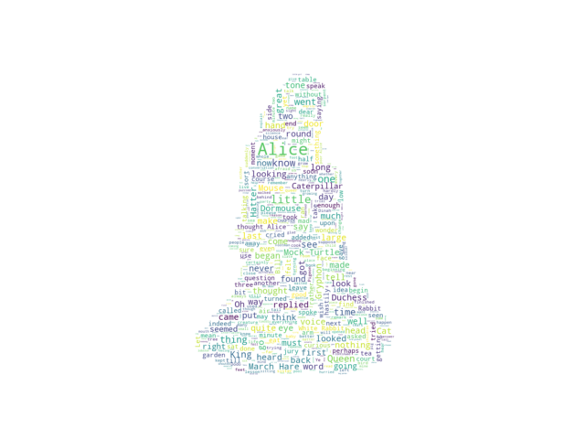

Note
Click here to download the full example code
Image-colored wordcloud¶
You can color a word-cloud by using an image-based coloring strategy implemented in ImageColorGenerator. It uses the average color of the region occupied by the word in a source image. You can combine this with masking - pure-white will be interpreted as ‘don’t occupy’ by the WordCloud object when passed as mask. If you want white as a legal color, you can just pass a different image to “mask”, but make sure the image shapes line up.
from os import path
from PIL import Image
import numpy as np
import matplotlib.pyplot as plt
import os
from wordcloud import WordCloud, STOPWORDS, ImageColorGenerator
# get data directory (using getcwd() is needed to support running example in generated IPython notebook)
d = path.dirname(__file__) if "__file__" in locals() else os.getcwd()
# Read the whole text.
text = open(path.join(d, 'alice.txt')).read()
# read the mask / color image taken from
# http://jirkavinse.deviantart.com/art/quot-Real-Life-quot-Alice-282261010
alice_coloring = np.array(Image.open(path.join(d, "alice_color.png")))
stopwords = set(STOPWORDS)
stopwords.add("said")
wc = WordCloud(background_color="white", max_words=2000, mask=alice_coloring,
stopwords=stopwords, max_font_size=40, random_state=42)
# generate word cloud
wc.generate(text)
# create coloring from image
image_colors = ImageColorGenerator(alice_coloring)
# show
fig, axes = plt.subplots(1, 3)
axes[0].imshow(wc, interpolation="bilinear")
# recolor wordcloud and show
# we could also give color_func=image_colors directly in the constructor
axes[1].imshow(wc.recolor(color_func=image_colors), interpolation="bilinear")
axes[2].imshow(alice_coloring, cmap=plt.cm.gray, interpolation="bilinear")
for ax in axes:
ax.set_axis_off()
plt.show()
Total running time of the script: ( 0 minutes 3.850 seconds)